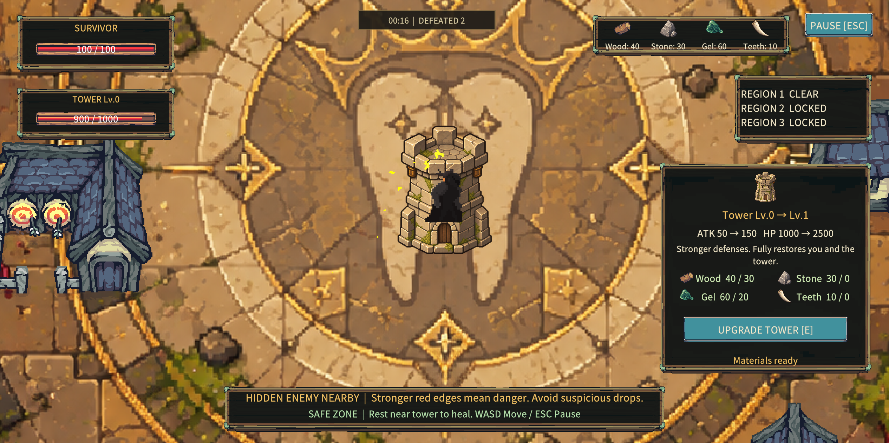
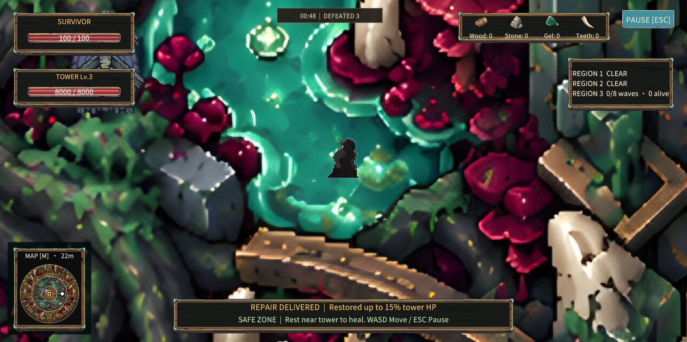
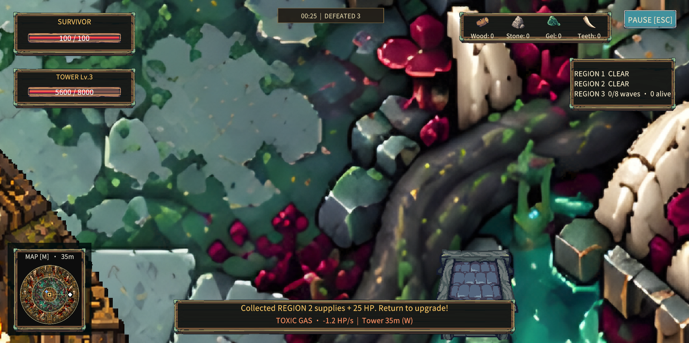

01

SURVIVAL
TOWER DEFENCE
RESOURCE GATHERING
TOWER DEFENCE
RESOURCE GATHERING
PC GAME
Unity · C# · GitHub
SOLO PROJECT
Game design & development
Level design · UI · Art direction
Level design · UI · Art direction
One night, toxic fog erupted beneath a medieval kingdom.
Its streets fell silent. Its dead began to rise.
A lone defender must gather resources and strengthen
the last tower that holds the poison back.
Its streets fell silent. Its dead began to rise.
A lone defender must gather resources and strengthen
the last tower that holds the poison back.
Picture Generated by AI


PLAYER & TOWER
Shared survival
The player and the tower depend on each other. I split movement and combat between them so positioning becomes the main way to survive.

THE PLAYER
Gathers materials and supplies, dodges threats and leads enemies back towards the tower. The player does not attack directly.
THE TOWER
Attacks automatically and anchors the defence. Spending resources on upgrades strengthens it and opens the next region.
UPGRADE MATERIALS

Wood

Stone

Gel

Teeth
Exploration pays for stronger defence.
LEVEL DESIGN
CORE LOOP & SYSTEMS

Gather resources
›

Upgrade the tower
›

Explore new ground
›

Return with supplies
PROGRESSION THROUGH SPACE
The three regions surround a fixed centre. The first ring keeps early gathering trips close to the tower. Reaching tower Lv.2 opens the second region; Lv.3 opens the third. The upgrade changes both the defence and the space the player can explore.
WHY LEAVE THE REFUGE?
Remaining near the tower is safer, so outward trips need a purpose. Resources fund upgrades and repair supplies help the tower survive. Leaving attack range creates a choice: keep collecting, or return before the journey becomes too dangerous.
FINAL OBJECTIVE Reach tower Lv.3 and clear every wave and remaining enemy across all three regions.
LEVEL PLAN & RETURN ROUTES
1 — Starting region
2 — Tower Lv.2
3 — Tower Lv.3
2 — Tower Lv.2
3 — Tower Lv.3
My original layout keeps the tower central. Each unlocked layer lengthens the trip while preserving a clear destination for the return.

Original layout sketch
The ring structure began on paper, before I built the regions in Unity.

BUILDINGS AS COVER
Detours let the player break pursuit and choose a safer approach back to the tower.
Detours let the player break pursuit and choose a safer approach back to the tower.
ART DIRECTION
From my sketch to a shared visual language
THE STARTING IDEA

My original tower & material sketch
I began with a tower that gains height and mass as it upgrades. The sketch also defines four resource types, connecting visual growth to the gathering loop.
THE WORLD SETS THE STYLE
Approved in-game backgrounds
I use these maps as the reference for stone colours, dark outlines and lighting. New assets need to belong beside the existing world.
BUILDING A READABLE UPGRADE
Keep the battlements and stonework recognisable; let the changing silhouette carry the progression.

Lv.0
›

Lv.1
›
Lv.2
›

Lv.3
Growth in height
A stronger base and broader silhouette
My brief guides AI generation; I select results against the approved art. I compare the stages together so each upgrade reads as part of one tower family.
FOUR MATERIALS, DISTINCT SHAPES
Wood
Stone
Gel
Teeth
Wood stays from the original asset set. Stone, gel and teeth are selected to fit the same world, with different silhouettes for quick recognition in the HUD.
CHECK IT IN THE GAME

Selected assets in Unity
FORM BEFORE DETAIL
At gameplay scale, the tower must remain easy to identify beside the dark player silhouette and the surrounding buildings.
ONE PALETTE, DIFFERENT ROLES
Warm stone ties the tower to the refuge. The material icons carry distinct colour accents, while the dark HUD keeps them readable.
MY CONTRIBUTION
Sketches & briefs → style selection →
reviewing AI artwork → Unity integration.
Sketches & briefs → style selection →
reviewing AI artwork → Unity integration.
AI-assisted asset development
CODE & SYSTEMS
How an upgrade changes the game
PROJECT STRUCTURE
Unity / C# / Assets / Scripts
Core/
GameFlowManager.cs · GameState.cs
Session states, pauses and the end of a run.
Player/
PlayerController.cs · PlayerInventory.cs
Movement, material counts and carried supplies.
Map/ + Map/Waves/
MapZone.cs · LevelWavesConfig.cs
Regional boundaries, wave data and upgrades.
Loot/ + Loot/Enemies/
LootManager.cs · EnemySpawner.cs · Tower.cs
Resource drops, spawning and tower progression.
Combat/
TowerAttackBehavior.cs · HealthSystem.cs
Automatic targeting, damage and shared health logic.
Camera/ + Rendering/
CameraBoundsFromMapUnlock.cs
Camera limits and world presentation.
Key files shown. The full C# inventory is included with this preview.
01 / VALIDATE BEFORE SPENDING
The upgrade checks proximity, level and material counts before payment. If the check fails, no resources are consumed.
Tower.cs / TryUpgrade()
public bool TryUpgrade(PlayerInventory inventory)
{
if (!CanUpgrade(inventory))
return false;
int targetLevel = NextLevel;
TowerUpgradeCost cost = GetUpgradeCostForNextLevel();
if (!TryPayUpgradeCost(inventory, cost))
return false;
SetLevel(targetLevel);
return true;
}02 / ONE LEVEL, SEVERAL UPDATES
SetLevel() applies combat stats, swaps the sprite and plays upgrade feedback. OnLevelChanged lets other systems react to the same progression state.
PLAYER RESULT
The tower grows, its stats change and the interface refreshes from one confirmed upgrade.
The tower grows, its stats change and the interface refreshes from one confirmed upgrade.
03 / OPEN THE NEXT REGION

Actual upgrade panel and gameplay
MapController reads the tower level. Region 1 starts open. Levels 2 and 3 allow the player to enter the next rings.
MapController.cs
public bool IsMapUnlocked(int mapLevel)
{
if (mapLevel <= 1) return true;
return tower != null &&
tower.CurrentLevel >= mapLevel;
}WHY THIS SEPARATION?
The UI requests an upgrade. The tower validates it. The map reads the result, keeping the unlock rule consistent across systems.
PLAYER EXPERIENCE
Finding the way back
The tower is the fixed reference point. The map helps the player judge an outward trip and find the route home as more regions open.

In-game field map: the same terrain, with region states and discovered points of interest.
ORIENTATION SUPPORTS EXPLORATION
Keeping the terrain visible helps players connect the map to the world. Opening it pauses the action, so checking a route does not cost health.
A SMALL SET OF CONTROLS
W A S D
Move & dodge
E
Upgrade near tower
M / TAB
Open field map
ESC
Pause / close
No direct player attack. Lead enemies into tower range and return to safety. English and Chinese remain available in Settings.
DANGER DURING GATHERING

Parasite proximity warning in the existing build
GOBLIN PURSUIT
Lead pursuing enemies towards the tower. Positioning lets its automatic attacks support the player.
DISGUISED LOOT
A parasite resembles a resource. The red edge warning signals nearby danger before the player steps onto it.
SIEGE BOSS
Its slam threatens the player and tower. A ground warning gives time to move before impact.
Design intent: readable danger. Playtest feedback on the next page shows that the overall pressure still needs work.
PLAYTEST & REFLECTION
The opening is not creating enough pressure
Feedback from two players · Summarised from reported comments
PLAYER 01
The start felt too easy.
The tower felt too powerful.
There was little sense of pressure.
The tower felt too powerful.
There was little sense of pressure.
PLAYER 02
The experience felt too straightforward.
It moved straight into play.
There was also little sense of pressure.
It moved straight into play.
There was also little sense of pressure.

Opening gameplay reference, not a recording of these sessions.
WHAT I TAKE FROM THE FEEDBACK
Both players described low pressure. This suggests the early game does not yet make protecting the tower feel urgent. The second comment also raises a separate question: does the opening give players enough purpose and meaningful choices?
These are two qualitative accounts. They identify issues to investigate, rather than proving a single cause.
NEXT ITERATION / PROPOSED, NOT YET VALIDATED
DESIGN QUESTION
CHANGE TO TEST
WHAT TO LOOK FOR
Does the tower solve the opening on its own?
Test lower early tower damage or a shorter attack reach, changing one variable at a time.
Do players need to reposition and bring enemies into range?
Does the first encounter create a decision?
Adjust early wave timing and approach directions while keeping attacks readable.
When does the player first react to danger or return to defend?
Does the opening establish a reason to act?
Try a short first objective: gather, return and upgrade. Then offer a choice of outward routes.
Can players explain their goal and choose a route without prompting?
KEEP THE CORE
Tower upgrades still unlock the three regions. The next test should strengthen the decisions around this loop.
Tower upgrades still unlock the three regions. The next test should strengthen the decisions around this loop.